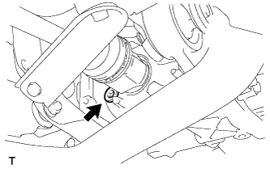
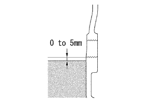

Differential Oil (4WD) Adjustment |
| 1. Inspect Differential Oil |
 |
Using a socket hexagon wrench 10mm, remove the rear differential filler plug and gasket.
 |
Check that the oil level is within 0 to 5mm of the bottom edge of the rear differential filler plug hole.
If the oil level is low, check for oil leaks, then add oil.
Using a socket hexagon wrench 10mm, tighten the rear differential filler plug with a new gasket.
| 2. Add Differential Oil |
Using a socket hexagon wrench 10mm, remove the rear differential filler plug and gasket.
Add Hypoid Gear Oil SX.
Check the oil level.
Using a socket hexagon wrench 10mm, tighten the rear differential filler plug with a new gasket.